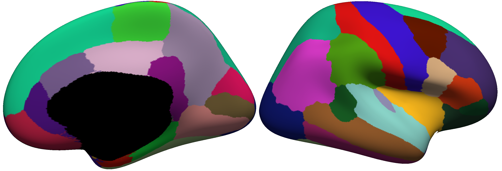
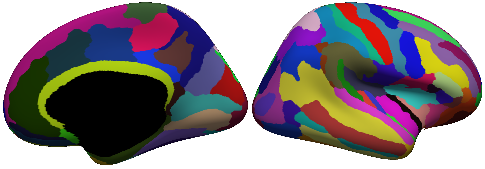
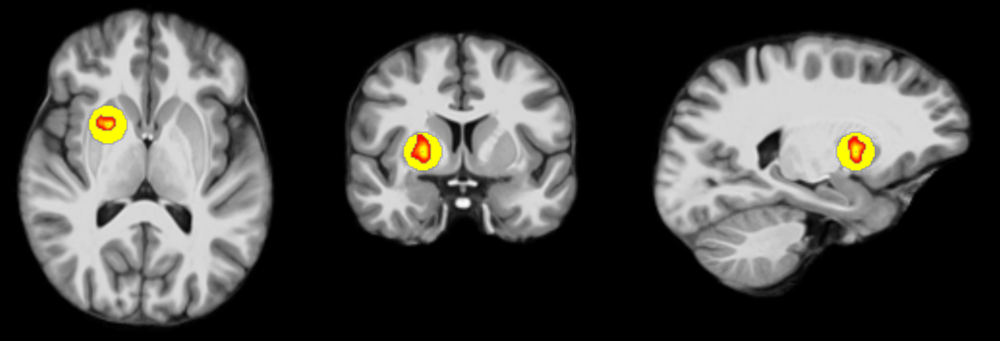
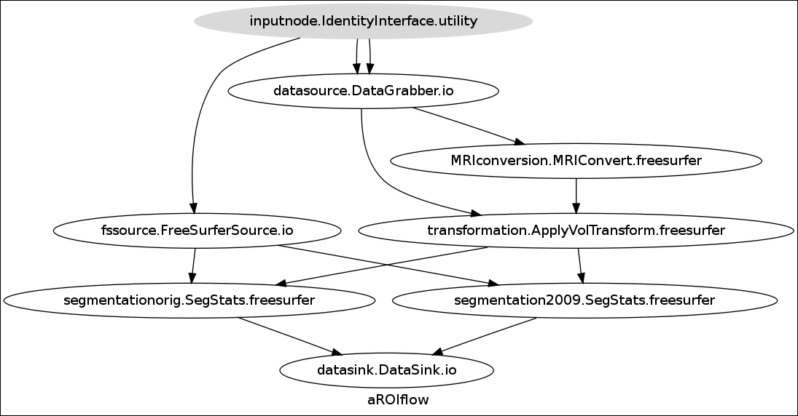
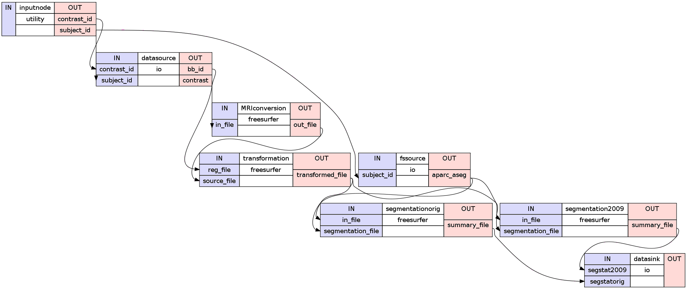
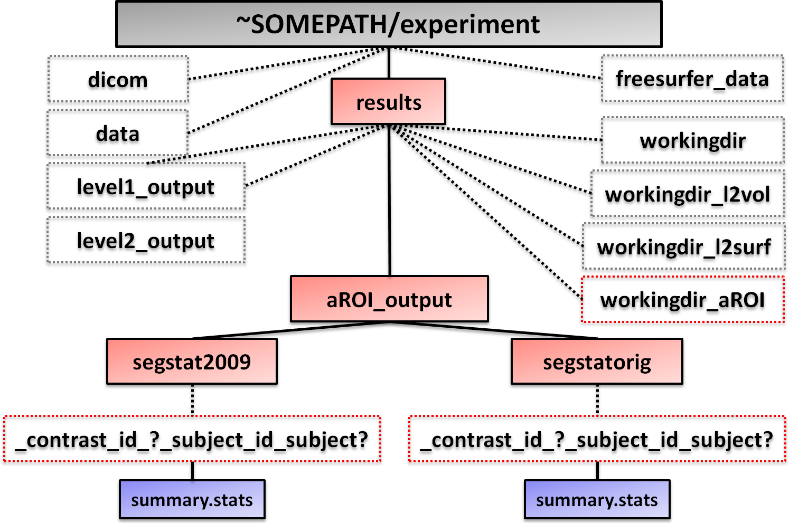
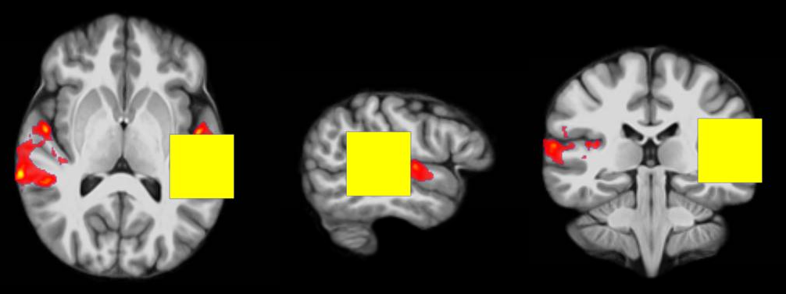
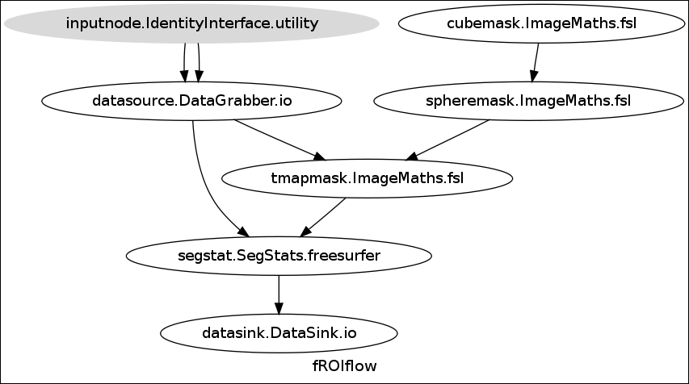
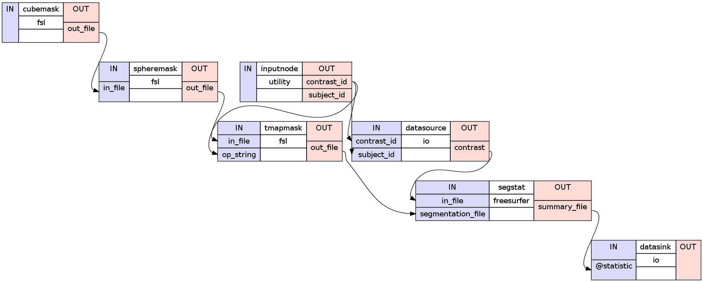
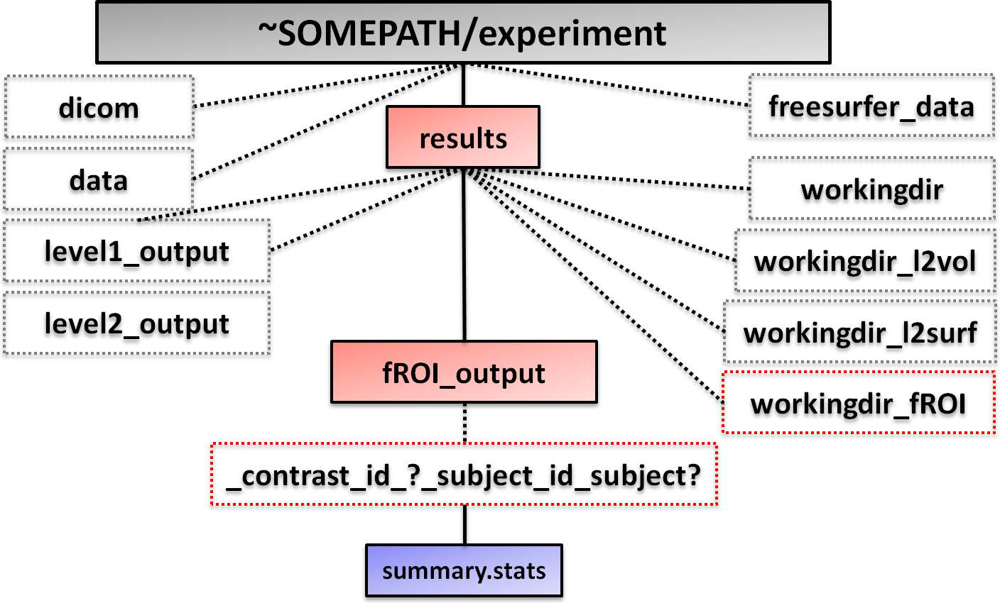

In this part we will learn how to extract statistical data from a strictly specified region or in other words a region of interest (ROI).
We will learn how to extract anatomical and functional ROIs, two ways of extraction which differ mostly by the way how they define a region of interest.
The region of an anatomical ROI is as the name implies defined by the anatomical structure of the brain (e.g. Thalamus, Putamen, Ventricle, Amygdala etc.). Such definitions of anatomical regions and there segmentations is stored in so called atlas. A well known atlas which is used by Nipype by default is the FreeSurfer Color Table.
This color table subdivides the brain in over 1000 different anatomical regions. The FreeSurfer Color Table enables to differentiate between gray and white matter areas. The table is divided into different sections. For the extraction of anatomical ROIs we are interested in the original Segmentation and in the 2009 Segmentation.
Note
Note that this separation between original and 2009 version of segmentation is defined by me and how I would subdivide the color table and by no means represent the structure that FreeSurfer intended.
The following list shows a part of the FreeSurfer Color Table. Import for us is the segmentation id and segmentation name, shown in the first two columns.
#No. Label Name: R G B A
[...]
9 Left-Thalamus 0 118 14 0
10 Left-Thalamus-Proper 0 118 14 0
11 Left-Caudate 122 186 220 0
12 Left-Putamen 236 13 176 0
13 Left-Pallidum 12 48 255 0
14 3rd-Ventricle 204 182 142 0
15 4th-Ventricle 42 204 164 0
16 Brain-Stem 119 159 176 0
17 Left-Hippocampus 220 216 20 0
18 Left-Amygdala 103 255 255 0
19 Left-Insula 80 196 98 0
20 Left-Operculum 60 58 210 0
[...]
48 Right-Thalamus 0 118 14 0
49 Right-Thalamus-Proper 0 118 14 0
50 Right-Caudate 122 186 220 0
51 Right-Putamen 236 13 176 0
52 Right-Pallidum 13 48 255 0
53 Right-Hippocampus 220 216 20 0
54 Right-Amygdala 103 255 255 0
55 Right-Insula 80 196 98 0
56 Right-Operculum 60 58 210 0
[...]
The ids from 1 to 999 can be found in the original as well as in the 2009 version of segmentation. The ids 1000 to 8014 can only be found in the original version and the ids 11100 to 14175 can only be found in the 2009 version of segmentation.
Visualization of original Segmentation: The following picture shows you the labels of the original segmentation. The annotation of which color belongs to which region is stored in ~SOMEPATH/experiment/freesurfer_data/fsaverage/label/lh.aparc.annot (if you’re interested in the left hemisphere)
Visualization of 2009 Segmentation: The following picture shows you the labels of the 2009 segmentation. The annotation of which color belongs to which region is stored in ~SOMEPATH/experiment/freesurfer_data/fsaverage/label/rh.aparc.a2009s.annot (if you’re interested in the right hemisphere)
Hint
If you want to explore those regions by ourself I recommend to open a FreeSurfer capable viewing tool and overlay the annotation file from the fsaverage/label folder.
The region of functional ROIs is solely defined by what point in “brain”-space you are interested in. You’re region of interest is most likely where there is a peak or interesting activation in your functional data, hence its name. The specification of the region can be done in different ways. Some may want to look at a cubic region with the point of interest as its center. Others want to extract a spherical region around a point of interest. And this is exactly what we will be doing in this chapter.
Visualization of a functional ROI: The following picture shows a spherical region with radius 10 voxel around the point of interest [110, 128, 142] in MNI-space.
Let’s now begin with the creation of an anatomical ROI pipeline.
1 2 3 4 5 | import os # system functions
import nipype.interfaces.freesurfer as fs # freesurfer
import nipype.interfaces.io as nio # i/o routines
import nipype.interfaces.utility as util # utility
import nipype.pipeline.engine as pe # pypeline engine
|
1 2 3 4 5 6 7 8 9 10 11 12 13 14 15 16 17 18 19 | #to better access the parent folder of the experiment
experiment_dir = '~SOMEPATH/experiment'
# Tell freesurfer what subjects directory to use
subjects_dir = experiment_dir + '/freesurfer_data'
fs.FSCommand.set_default_subjects_dir(subjects_dir)
#dirnames for anatomical ROI pipeline
aROIOutput = 'aROI_output' #location and name of aROI datasink
l1contrastDir = 'level1_output' #name of first level datasink
#list of subjectnames
subjects = ['subject1', 'subject2', 'subject3']
#list of contrastnumbers the pipeline should consider
contrasts = ['01','02','03','04','05']
#name of the first session from the first level pipeline
nameOfFirstSession = 'func1'
|
Note
The name of the first session is necessary, because the bbregister file from the first level pipeline contains the name of the first session in its name. E.g. if the first condition is func1, than the name of the bbregister file for the second subject is meanafunc1_bbreg_subject2.dat.
As mentioned above we are using the FreeSurfer Color Table to define the anatomical regions. Let’s assume that we want to extract the following regions:
1 2 3 4 | #Specification of the regions from the original and
#the 2009 segmentation version of the FreeSurfer Color Table
ROIregionsorig = ['11','50','12','51','1007','2007','1022','2022']
ROIregions2009 = ['11134','12134']
|
Note
There is no harm by defining a segmentation id in the wrong segmentation version, but if you specify an id between 1000 to 9999 in the ROIregions2009 list, you just won’t extract any other value than 0 from your data.
1 2 3 4 5 | #Node: IdentityInterface - to iterate over subjects and contrasts
inputnode = pe.Node(interface=util.IdentityInterface(fields=['subject_id','contrast_id']),
name='inputnode')
inputnode.iterables = [('subject_id', subjects),
('contrast_id', contrasts)]
|
As always when we define the DataGrabber node, it is important to be aware of the structure and the files that we want to grab. In this case we want to grab the subject specific contrasts and bbregister file from the first level pipeline.
In our version the second contrast for the third subject can be found at: ~SOMEPATH/experiment/results/level1_output/vol_contrast/_subject_id_subject3/ con0002.img and the bbregister file for the first subject can be found at: ~SOMEPATH/experiment/results/level1_output/bbregister/_subject_id_subject1/ meanafunc1_bbreg_subject1.dat. Knowing this, we can build our datagrabber node as follows:
1 2 3 4 5 6 7 8 9 10 11 | #Node: DataGrabber - to grab the input data
datasource = pe.Node(interface=nio.DataGrabber(infields=['subject_id','contrast_id'],
outfields=['contrast','bb_id']),
name = 'datasource')
datasource.inputs.base_directory = experiment_dir + '/results/' + l1contrastDir
datasource.inputs.template = '%s/_subject_id_%s/%s%s%s'
info = dict(contrast = [['vol_contrasts','subject_id','con_00','contrast_id','.img']],
bb_id = [['bbregister','subject_id','meana'+nameOfFirstSession+'_bbreg_',
'subject_id','.dat']])
datasource.inputs.template_args = info
|
Let’s now continue with the implementation of the other nodes that we need for our anatomical ROI pipeline.
1 2 3 4 5 6 7 8 9 10 11 12 13 14 15 16 17 18 19 20 21 22 23 24 25 26 | #Node: FreeSurferSource - to grab FreeSurfer files from the recon-all process
fssource = pe.Node(interface=nio.FreeSurferSource(),name='fssource')
fssource.inputs.subjects_dir = subjects_dir
#Node: MRIConvert - to convert files from FreeSurfer format into nifti format
MRIconversion = pe.Node(interface=fs.MRIConvert(),name='MRIconversion')
MRIconversion.inputs.out_type = 'nii'
#Node: ApplyVolTransform - to transform contrasts into anatomical space
# creates 'con_*.anat.bb.mgh' files
transformation = pe.Node(interface=fs.ApplyVolTransform(),name='transformation')
transformation.inputs.fs_target = True
transformation.inputs.interp = 'nearest'
#Node: SegStatsorig - to extract specified regions of the original segmentation
segmentationorig = pe.Node(interface=fs.SegStats(),name='segmentationorig')
segmentationorig.inputs.segment_id = ROIregionsorig
#Node: SegStats2009 - to extract specified regions of the 2009 segmentation
segmentation2009 = pe.Node(interface=fs.SegStats(),name='segmentation2009')
segmentation2009.inputs.segment_id = ROIregions2009
#Node: Datasink - Creates a datasink node to store important outputs
datasink = pe.Node(interface=nio.DataSink(), name="datasink")
datasink.inputs.base_directory = experiment_dir + '/results'
datasink.inputs.container = aROIOutput
|
Note
We implement two SegStats nodes because we have two lists of segmentation, the original and the 2009 one. It might be possible two feed those values into one node with an iterable, but I prefere this way.
If you don’t specify a value for segment_id the pipeline will extract all regions of your atlas. This is not bad but can take a long time.
1 2 3 | #Initiation of the ROI extraction workflow
aROIflow = pe.Workflow(name='aROIflow')
aROIflow.base_dir = experiment_dir + '/results/workingdir_aROI'
|
Before we can start with the integration of the nodes into aROIflow we have to be aware about something. If we would try to simply connect fssource with segmentationorig like this...
...(fssource, segmentationorig,[('aparc_aseg','segmentation_file')]),
... we would get the following error:
Node: segmentationorig
input: segmentation_file
TraitError: The 'segmentation_file' trait of a SegStatsInputSpec instance must be an
existing file name, but a value of ['~SOMEPATH/experimentfreesurfer_data/
subject1/mri/aparc+aseg.mgz', '~SOMEPATH/experiment/freesurfer_data/subject1/mri
/aparc.a2009s+aseg.mgz'] <type 'list'> was specified.
This means that the output of the fssource node has the value: ['~SOMEPATH/experiment/freesurfer_data/subject1/mri/aparc+aseg.mgz', '~SOMEPATH/experiment/freesurfer_data/subject1/mri/aparc.a2009s+aseg.mgz']. That means we have to guide the output of this node so that segmentationorig receives the path to aparc+aseg.mgz and that segmentation2009 receives the path to aparc.a2009s+aseg.mgz.
This can be achieved with a simple function:
1 2 3 4 5 | def getVersion(in_file, version):
if version == 0:
return in_file[0]
else:
return in_file[1]
|
Now we are ready to build our anatomical ROI pipeline.
1 2 3 4 5 6 7 8 9 10 11 12 13 14 15 16 17 18 19 | #Connect up all components
aROIflow.connect([(inputnode, datasource,[('subject_id','subject_id'),
('contrast_id','contrast_id'),
]),
(inputnode, fssource,[('subject_id','subject_id')]),
(fssource, segmentationorig,[(('aparc_aseg',getVersion,0),
'segmentation_file')]),
(fssource, segmentation2009,[(('aparc_aseg',getVersion,1),
'segmentation_file')]),
(datasource, MRIconversion,[('contrast','in_file')]),
(MRIconversion, transformation,[('out_file','source_file')]),
(datasource, transformation,[('bb_id','reg_file')]),
(transformation, segmentationorig,[('transformed_file',
'in_file')]),
(transformation, segmentation2009,[('transformed_file',
'in_file')]),
(segmentationorig, datasink,[('summary_file', 'segstatorig')]),
(segmentation2009, datasink,[('summary_file', 'segstat2009')]),
])
|
1 2 | aROIflow.write_graph(graph2use='flat')
aROIflow.run(plugin='MultiProc', plugin_args={'n_procs' : 2})
|
This graph of the hierarchical version shows the aROIflow:
This detailed graph of the flat version shows the aROIflow:
This part is optional and shows only one of many ways how you can summarize the output of aROIflow into a common cvs-file. In essence it does the following steps for each contrast:
1 2 3 4 5 6 7 8 9 10 11 12 13 14 15 16 17 18 19 20 21 22 23 24 25 26 27 28 29 30 31 32 33 34 35 36 37 38 39 40 41 42 43 44 45 46 47 48 49 50 51 52 53 54 55 56 57 58 59 60 61 62 63 64 65 66 67 68 69 70 71 72 73 74 75 76 77 78 79 80 81 82 83 84 85 86 87 88 89 90 91 92 93 94 95 | #iterate over contrasts and create a cvs-file for each
for contrast in contrasts:
#creates a list with an empty entry for each segmentation id
output = []
for i in range(15000):
output.append([i,None])
#to keep track of added subjects
subjectNumber = 1
path2aROIOut = experiment_dir+'/results/'+aROIOutput
#iterate over subjects and entering values into output
for subject in subjects:
#specify path to aROI datasink for each variaton of segmentation
path2Sumfile = '_contrast_id_'+contrast+'_subject_id_'+subject+'/summary.stats'
statsFileorig = path2aROIOut+'/segstatorig/'+path2Sumfile
statsFile2009 = path2aROIOut+'/segstat2009/'+path2Sumfile
#extract the data from the output summary files
dataFile = open(statsFileorig, 'r')
dataorig = dataFile.readlines()
dataFile.close()
dataFile = open(statsFile2009, 'r')
data2009 = dataFile.readlines()
dataFile.close()
#function to check where the data starts
def findStartOfData(datafile):
for line in range(100):
if datafile[line][0] != '#':
return line
#get data and store it in tempresult
tempresult = []
for line in range(len(dataorig)):
if line < findStartOfData(dataorig):
pass
else:
temp = dataorig[line].strip('\n').split()
tempresult.append([int(temp[1]),temp[4],float(temp[5])])
for line in range(len(data2009)):
if line < findStartOfData(data2009):
pass
else:
temp = data2009[line].strip('\n').split()
tempresult.append([int(temp[1]),temp[4],float(temp[5])])
tempresult.sort()
result = []
for line in range(len(tempresult)):
#pass if region has already been added
if line > 0 and tempresult[line] == tempresult[line-1]:
pass
else:
result.append(tempresult[line])
for ROI in result:
#if id wasn't extracted before, adds name of id to row
if output[ROI[0]][1] == None:
output[ROI[0]][1] = ROI[1]
#adds value of id into row
output[ROI[0]].append(ROI[2])
#if no value for an id was entered for a subject
# the value 0.0 gets added
for ROI in output:
if len(ROI) < subjectNumber+2:
ROI.append(0.0)
subjectNumber += 1
#adds labels to the first row of the output
output.insert(0,['SegId','StructName'])
output[0].extend(subjects)
#adds segment if it was extracted
output = [ROI for ROI in output if ROI[1] != None]
#define name of the output csv-file
summaryFileName = 'aROI_'+contrast+'.csv'
#store output into a cvs-file
f = open(path2aROIOut+'/'+summaryFileName,'wb')
import csv
outputFile = csv.writer(f)
for line in output:
outputFile.writerow(line)
f.close()
|
Hint
The code for this anatomical ROI pipeline can be found here: aROIpipeline.py
After we’ve run the anatomical ROI pipeline our folder structure should look like this:
Additionally to the level2_output folder in ~SOMEPATH/experiment/results/ we now have the new folders:
workingdir_aROI folder that contains all the data that gets created from the aROIflow pipeline. As with all working directories, it is highly recommended to delete this folder as soon as possible.
aROI_output folder which is the datasink of the anatomical ROI pipeline. It contains:
- segstatorig folder with the summary.stats file from the original segmentation for each contrast and subject
- segstat2009 folder with the summary.stats file from the 2009 segmentation for each contrast and subject
Note
If you run the additonal python code that is at the end of the script, the summarization files that get created will be stored in ~SOMEPATH/experiment/results/aROI_output.
As said before, the most important difference to the extraction of an antomical ROI is that the region of interest isn’t predifined by some atlas. In this example we define the region we are interested in solely by a point in “brain”-space and by a the radius of a sphere around this point. The procedure to this is quite simple:
Our functional ROI pipeline does almost exactly this. The only difference is that we have to divide the first step into smaller substeps:
Let’s take a closer look at those steps:
Step A: Define a point of interest
In this image that shows a thresholded contrast from our second level volume pipeline we know that the point with coordinations [110,128,142] seems to be very active and therefore interesting.
Step B: Create a cube
To create this cube around the point of interesting some not so obvious steps have to be done. First, take a subject specific contrast multiply all voxel by 0 and add the value 1 to each. Second, define a cubic area around your point of interest by specifying the lowest corners of the cube and the length of its sides, which in this example is 10. Now you have a cubic region where all voxel inside the cube have value 1 and all voxel outside the cube have value 0.
#this is the command line that fsl.ImageMaths() would create for this step
fslmaths ~SOMEPATH/experiment/results/level1_output/normcons/subject1/con_0004_ants.nii
-mul 0 -add 1 -roi 100 20 118 20 132 20 0 1 ~SOMEPATH/experiment/blabla/
con_0004_ants_maths.nii.gz -odt float
Step C: Smooth cube to a sphere
To achive this you have to take the cube and smooth it to a sphere. If you’re using fsl.ImageMaths() you have to threshold the sphere with 0.5 and binarize it afterwards. Now you have sphere with the same diameter as the side of the cube was.
#this is the command line that fsl.ImageMaths() would create for this step
fslmaths ~SOMEPATH/experiment/blabla/con_0004_ants_maths.nii.gz -kernel sphere 10 -fmean
-thr 0.5 -bin ~SOMEPATH/experiment/blabla/con_0004_ants_maths_maths.nii.gz -odt float
Step D: Mask ROI with subject specific T-map
The final step of creating a functional is to mask your functional ROI for each subject and each contrast with the corresponding T-map. This leads to the picture above. With this way we take into account that only the values from the T-map in the specified region get counted.
#this is the command line that fsl.ImageMaths() would create for this step
fslmaths ~SOMEPATH/experiment/blabla/con_0004_ants_maths_maths.nii.gz
-mas ~SOMEPATH/experiment/results/level1_output/normtmaps/subject1/spmT_0004_ants.nii
~SOMEPATH/experiment/blabla/con_0010_ants_maths_maths_maths.nii.gz -odt float
Let’s now begin with the creation of our functional ROI pipeline.
1 2 3 4 5 6 | import os # system functions
import nipype.interfaces.freesurfer as fs # freesurfer
import nipype.interfaces.io as nio # i/o routines
import nipype.interfaces.utility as util # utility
import nipype.pipeline.engine as pe # pypeline engine
import nipype.interfaces.fsl as fsl # fsl module
|
1 2 3 4 5 6 7 8 9 10 11 12 | #to better access the parent folder of the experiment
experiment_dir = '~SOMEPATH/experiment'
#dirnames for functional ROI pipeline
fROIWorkingdir = '/result/fROI_workingdir' #location and name of workingdir
fROIOutput = 'result/fROI_output' #location and name of fROI datasink
#list of subjectnames
subjects = ['subject1', 'subject2', 'subject3']
#list of contrastnumbers the pipeline should consider
contrasts = ['01','02','03','04','05']
|
1 2 3 4 5 6 7 8 9 10 | #define the coordination of point of interest
centerOfROI = [110,128,142]
#define the radius of the sphere of interest
radius = 10
#calculates the beginning corner of the cubic ROI
corner = [centerOfROI[0]-radius,
centerOfROI[1]-radius,
centerOfROI[2]-radius]
|
1 2 3 4 5 6 7 8 9 10 11 12 13 14 15 16 17 18 19 20 21 22 23 24 25 26 27 28 29 30 31 32 33 34 35 36 37 38 39 | #Node: IdentityInterface - to iterate over subjects and contrasts
inputnode = pe.Node(interface=util.IdentityInterface(fields=['subject_id','contrast_id']),
name='inputnode')
inputnode.iterables = [('subject_id', subjects),
('contrast_id', contrasts)]
#Node: DataGrabber - To grab the input data
datasource = pe.Node(interface=nio.DataGrabber(infields=['subject_id','contrast_id'],
outfields=['contrast']),
name = 'datasource')
datasource.inputs.base_directory = experiment_dir + 'result/' + l1contrastDir
datasource.inputs.template = '/%s/norm%s/%s_%04d_ants.nii'
datasource.inputs.template_args = dict(contrast = [['subject_id','cons','con','contrast_id']],
tmaps = [['subject_id','tmaps','spmT','contrast_id']])
#Node: ImageMaths - to create the cubic ROI with value 1
cubemask = pe.Node(interface=fsl.ImageMaths(),name="cubemask")
cubemask.inputs.op_string = '-mul 0 -add 1 -roi %d %d %d %d %d %d 0 1'%(corner[0],radius*2,corner[1],radius*2,corner[2],radius*2)
cubemask.inputs.out_data_type = 'float'
cubemask.inputs.in_file = '~SOMEPATH/experiment/normcons/%s/con_%04d_ants.nii'%(subjects[0],contrasts[0])
#Node: ImageMaths - to smooth the cubic ROI to a sphere
spheremask = pe.Node(interface=fsl.ImageMaths(),name="spheremask")
spheremask.inputs.op_string = '-kernel sphere %d -fmean -thr 0.5 -bin'%radius
spheremask.inputs.out_data_type = 'float'
#Node: ImageMaths - to mask the spherical ROI with a subject specific tmap
tmapmask = pe.Node(interface=fsl.ImageMaths(),name="tmapmask")
tmapmask.inputs.out_data_type = 'float'
#Node: SegStats - to extract the statistic from a given segmentation
segstat = pe.Node(interface=fs.SegStats(),name='segstat')
#Node: Datasink - Create a datasink node to store important outputs
datasink = pe.Node(interface=nio.DataSink(), name="datasink")
datasink.inputs.base_directory = experiment_dir
datasink.inputs.container = fROIOutput
|
Note
If you are interested in what command actually will be executed by the cubemask node you just simply can execute cubemask.cmdline. In this example this will give you the following output: blablabla But it’s important that the interface isn’t defined as a node. Has to be without pe.Node....
1 2 3 4 5 6 7 8 9 10 11 12 13 14 | #Initiation of the fROI extraction workflow
fROIflow = pe.Workflow(name='fROIflow')
fROIflow.base_dir = experiment_dir + fROIWorkingdir
#Connect up all components
fROIflow.connect([(cubemask, spheremask,[('out_file', 'in_file')]),
(spheremask, tmapmask,[('out_file', 'in_file')]),
(datasource, tmapmask,[(('tmaps',path2tmap), 'op_string')]),
(infosource1, datasource,[('subject_id', 'subject_id')]),
(infosource2, datasource,[('contrast_id', 'contrast_id')]),
(tmapmask, segstat,[('out_file', 'segmentation_file')]),
(datasource, segstat,[('contrast', 'in_file')]),
(segstat, datasink,[('summary_file', '@statistic')]),
])
|
1 2 | fROIflow.write_graph(graph2use='flat')
fROIflow.run(plugin='MultiProc', plugin_args={'n_procs' : 4})
|
This graph of the hierarchical version shows the fROIflow:
This detailed graph of the flat version shows the fROIflow:
1 2 3 4 5 6 7 8 9 10 11 12 13 14 15 16 17 18 19 20 21 22 23 24 25 26 27 28 29 30 | path2aROIOut = experiment_dir+'/results/'+aROIOutput
output = []
output.append(['coordinations:',centerOfROI,'radius:',radius])
for contrast in contrasts:
contrast = str(contrast)
output.append(['contrast:',contrast])
for subject in subjects:
path2Sumfile = '_contrast_id_'+contrast+'_subject_id_'+subject
statFile = path2aROIOut + path2Sumfile + '/summary.stats'
#Get the data from the output file
dataFile = open(statFile, 'r')
data = dataFile.readlines()
dataFile.close()
output.append([subject,data[-1].split()[5]])
output.append([])
import csv
f = open(path2aROIOut+'/fROI_spherical'+str(centerOfROI)+'_%s_result.csv'%radius,'wb')
outputFile = csv.writer(f)
for line in output:
outputFile.writerow(line)
f.close()
|
Hint
The code for this functional ROI pipeline can be found here: fROIpipeline.py
After we’ve run the functional ROI pipeline our folder structure should look like this:
Additionally to the level2_output folder in ~SOMEPATH/experiment/results/ we now have the new folders:
Note
If you run the additonal python code that is at the end of the script, the summarization files that get created will be stored in ~SOMEPATH/experiment/results/fROI_output.